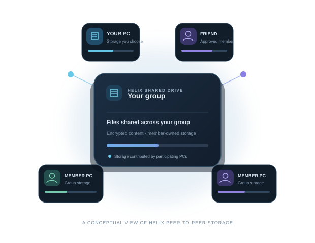

01
Create or join a drive
Start a group for your people, or join one with an invite from someone you know.
A shared drive for your circle
Helix lets friends and family share files using storage they choose to offer from their own PCs.
Official Windows installer64-bit · Windows

A simple idea, shared
Each person chooses a local storage location and contribution. Helix coordinates the shared drive between member computers.
Start a group for your people, or join one with an invite from someone you know.
Pick the local disk and set a storage limit. Helix stores data as files are added; it does not pre-fill the space.
Send a signed invite code or QR. A drive admin reviews each request before that device joins.
Made for groups, not data centres
Files are stored in encrypted chunks across participating PCs. The group can set how many copies to keep, while each person controls the space their own PC offers.
Illustration · actual capacity depends on member contributions and copies
Stay connected
Helix is peer-to-peer. Members' computers hold the files, so connections and availability depend on those PCs.
LAN discovery is built in. Keep Helix running on a PC that stores the file so other members can reach it.
Internet sharing needs a reachable peer or the same public relay configured on each PC. Cross-country access is not automatic.
Offering 10 GB lets Helix use up to that amount for group data on your selected storage volume. Space is used as files are stored. Replication can reduce the group's usable room; the Windows Explorer drive may show capacity differently from the in-app view.
Good to know
Not yet. Helix 0.1.11 uses a local device identity and stores its private keys on that Windows account. A Google account, cloud recovery and automatic drive restoration across PCs are not implemented. Joining another PC currently requires a drive invite, and files need an online member PC holding a copy.
The current installer is not digitally signed. Windows may therefore show an “unrecognized app” warning. Download Helix only from the official release link on this page. A signature can identify the publisher, but a new app may still need to build SmartScreen reputation.
Helix includes a Windows drive mount, with the in-app Files view as a fallback. Explorer listing and capacity can vary with the installed filesystem driver and Windows WebDAV behavior; verify access in Helix if Explorer does not list files correctly.
No. The contribution sets the maximum space Helix may use. It does not reserve or fill all of that space at setup. Data uses disk as group files are stored on your PC.
Files need at least one online group PC holding a valid copy to be available. More copies can improve availability, and use more of the members' contributed storage.
Start with your circle
Create a drive, choose what to share, and invite your people.